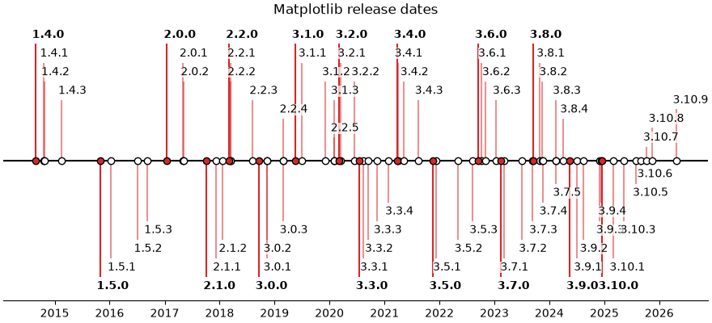

Note
Go to the end to download the full example code.
Timeline with lines, dates, and text#
How to create a simple timeline using Matplotlib release dates.
Timelines can be created with a collection of dates and text. In this example, we show how to create a simple timeline using the dates for recent releases of Matplotlib. First, we'll pull the data from GitHub.
from datetime import datetime
import matplotlib.pyplot as plt
import numpy as np
import matplotlib.dates as mdates
try:
# Try to fetch a list of Matplotlib releases and their dates
# from https://api.github.com/repos/matplotlib/matplotlib/releases
import json
import urllib.request
url = 'https://api.github.com/repos/matplotlib/matplotlib/releases'
url += '?per_page=100'
data = json.loads(urllib.request.urlopen(url, timeout=1).read().decode())
dates = []
releases = []
for item in data:
if 'rc' not in item['tag_name'] and 'b' not in item['tag_name']:
dates.append(item['published_at'].split("T")[0])
releases.append(item['tag_name'].lstrip("v"))
except Exception:
# In case the above fails, e.g. because of missing internet connection
# use the following lists as fallback.
releases = ['2.2.4', '3.0.3', '3.0.2', '3.0.1', '3.0.0', '2.2.3',
'2.2.2', '2.2.1', '2.2.0', '2.1.2', '2.1.1', '2.1.0',
'2.0.2', '2.0.1', '2.0.0', '1.5.3', '1.5.2', '1.5.1',
'1.5.0', '1.4.3', '1.4.2', '1.4.1', '1.4.0']
dates = ['2019-02-26', '2019-02-26', '2018-11-10', '2018-11-10',
'2018-09-18', '2018-08-10', '2018-03-17', '2018-03-16',
'2018-03-06', '2018-01-18', '2017-12-10', '2017-10-07',
'2017-05-10', '2017-05-02', '2017-01-17', '2016-09-09',
'2016-07-03', '2016-01-10', '2015-10-29', '2015-02-16',
'2014-10-26', '2014-10-18', '2014-08-26']
dates = [datetime.strptime(d, "%Y-%m-%d") for d in dates] # Convert strs to dates.
releases = [tuple(release.split('.')) for release in releases] # Split by component.
dates, releases = zip(*sorted(zip(dates, releases))) # Sort by increasing date.
Next, we'll create a stem plot with some variation in levels as to distinguish even close-by events. We add markers on the baseline for visual emphasis on the one-dimensional nature of the timeline.
For each event, we add a text label via annotate, which is offset
in units of points from the tip of the event line.
Note that Matplotlib will automatically plot datetime inputs.
# Choose some nice levels: alternate meso releases between top and bottom, and
# progressively shorten the stems for micro releases.
levels = []
macro_meso_releases = sorted({release[:2] for release in releases})
for release in releases:
macro_meso = release[:2]
micro = int(release[2])
h = 1 + 0.8 * (5 - micro)
level = h if macro_meso_releases.index(macro_meso) % 2 == 0 else -h
levels.append(level)
def is_feature(release):
"""Return whether a version (split into components) is a feature release."""
return release[-1] == '0'
# The figure and the axes.
fig, ax = plt.subplots(figsize=(8.8, 4), layout="constrained")
ax.set(title="Matplotlib release dates")
# The vertical stems.
ax.vlines(dates, 0, levels,
color=[("tab:red", 1 if is_feature(release) else .5) for release in releases])
# The baseline.
ax.axhline(0, c="black")
# The markers on the baseline.
meso_dates = [date for date, release in zip(dates, releases) if is_feature(release)]
micro_dates = [date for date, release in zip(dates, releases)
if not is_feature(release)]
ax.plot(micro_dates, np.zeros_like(micro_dates), "ko", mfc="white")
ax.plot(meso_dates, np.zeros_like(meso_dates), "ko", mfc="tab:red")
# Annotate the lines.
for date, level, release in zip(dates, levels, releases):
version_str = '.'.join(release)
ax.annotate(version_str, xy=(date, level),
xytext=(-3, np.sign(level)*3), textcoords="offset points",
verticalalignment="bottom" if level > 0 else "top",
weight="bold" if is_feature(release) else "normal",
bbox=dict(boxstyle='square', pad=0, lw=0, fc=(1, 1, 1, 0.7)))
ax.xaxis.set(major_locator=mdates.YearLocator(),
major_formatter=mdates.DateFormatter("%Y"))
# Remove the y-axis and some spines.
ax.yaxis.set_visible(False)
ax.spines[["left", "top", "right"]].set_visible(False)
ax.margins(y=0.1)
plt.show()

References
The use of the following functions, methods, classes and modules is shown in this example:
Total running time of the script: (0 minutes 1.218 seconds)